原文连接:https://www.cnblogs.com/wj000/p/10974717.html
刚学习了Webpack，ememememememememem就赶脚是一个打包工具，将js、css、json、img等等通通打包为最终的文件，最后渲染为一个页面。
也是终于捋清了Webpack的思路，在这里分享一下：
学习Webpack之前首先要知道Webpack是什么？它有什么作用？
Webpack是一个前端资源打包工具
Webpack它会将你的项目看作是一个整体，通过一个给定的主文件，寻找到所依赖的所有分支文件，通过lorder处理为浏览器能够识别JavaScript文件
知道它的作用之后我们就需要在nodejs来操作了
首先我们在一个新文件夹中来利用nodejs创建package.json文件
在nodejs中输入 npm init创建，如下图：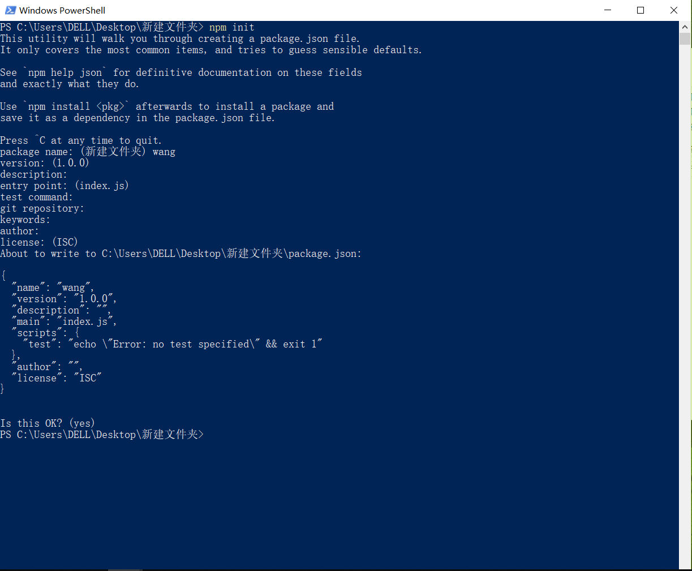
创建完毕之后，我们再安装Webpack
首先是全局的安装(注：我安装的是3.8.1的版本)，如下图：
输入的指令为：npm install -g webpack@3.8.1
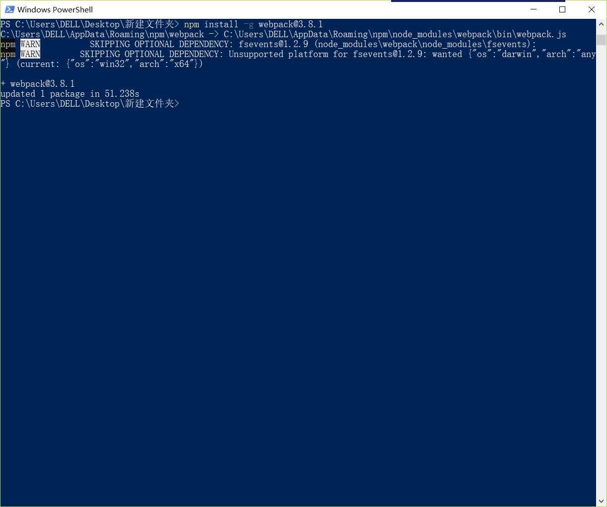
然后我们在下载当前的文件下：
指令为：npm install webpack@3.8.1
这种局部下载和全局下载是一样的，一个是在任何地方都可以使用，一个只能在当前文件下使用，就不贴图了。
这下我们就可以打包js文件了，打包的指令为 webpack 入口文件名称 出口文件名称
其中index.js为入口文件 rundle.js为出口文件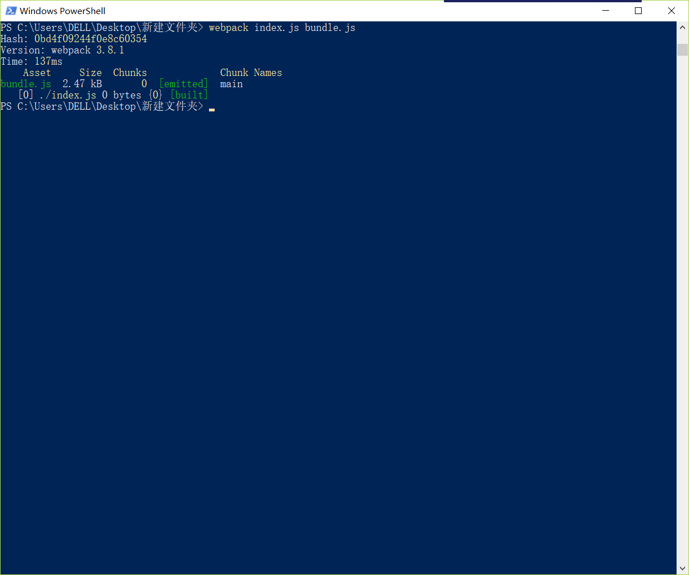
这就完成了js文件的打包，但是这种打包指令如果有多个js的话会比较麻烦，这就需要我们用一种快捷方式来将它打包，这时我们就需要配置一个webpack.config.js文件，在文件夹中创建此文件，然后再里面配置内容，如下图：
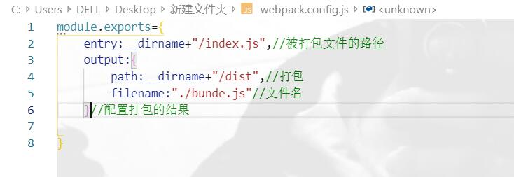
这时我们在nodejs中输入webpack，就会发下dist文件下有一个打包出来的js文件
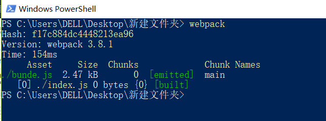
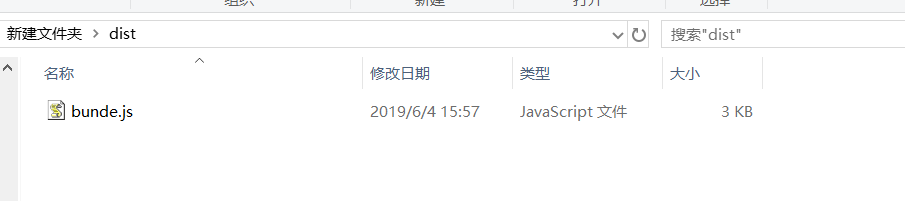
这样我们就完成了js文件的打包，接下来我们对css文件的打包，这时我们需要下载css打包所需要的文件：
在nodejs输入如下指令：
npm install style-loader css-loader --save -dev
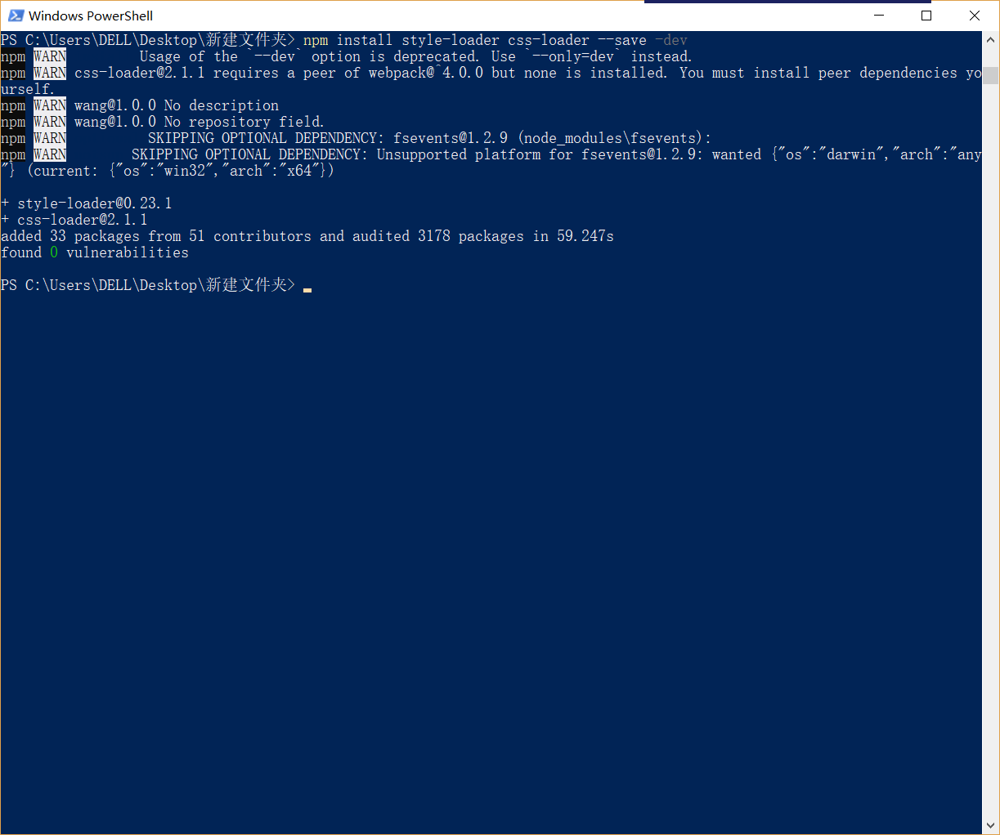
如上我们下载完毕之后，在webpack.config.js文件中添加如下指令：
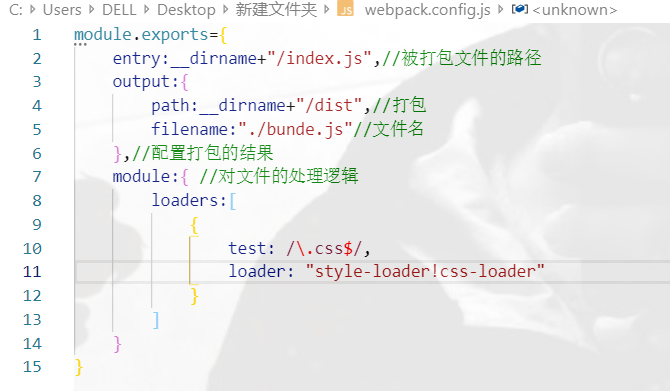
这样我们可以将css文件打包了，还可以将json文件、img图片打包(暂时还没学习，后续将会更新)
接下来我们在来说一下热加载，就是将文件内容改变之后保存就会自动改变打包后的文件，不需要再进行繁琐的配置
还是需要先下载：
在nodejs输入如下指令：
也是如上需要一遍全局下载，一遍局部下载
npm install webpack-dev-server@2.9.4
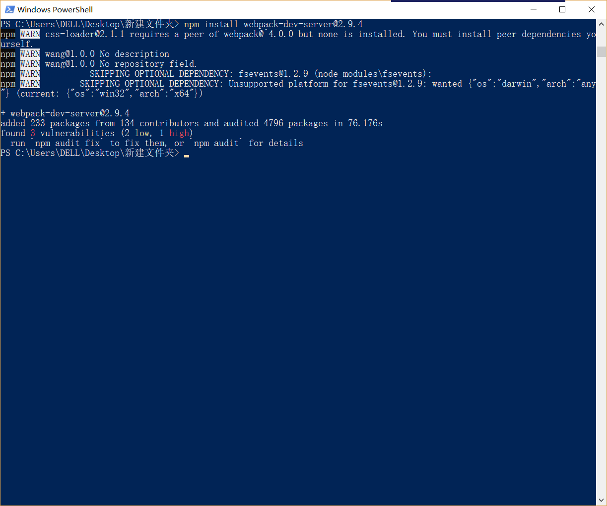
配置完毕之后我们还需要在packjson中文件中添加如下代码：
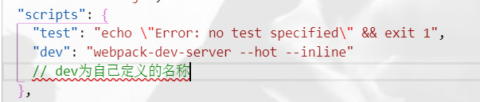
接下来在nodesj中输入指令npm run dev，就可以启动了
然后我们创建一个app.css文件、index.html文件和aaa.js文件，在css中输入body：{background:red}，将css文件和js文件打包，引入到html文件中
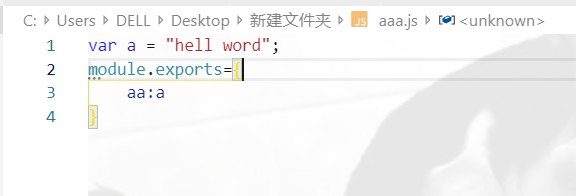
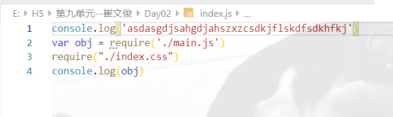
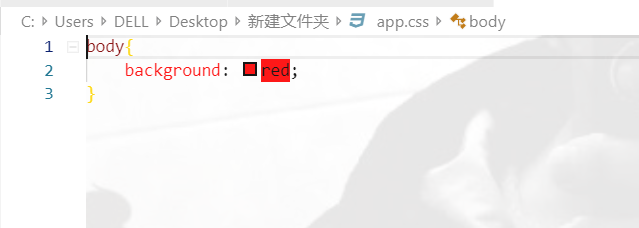
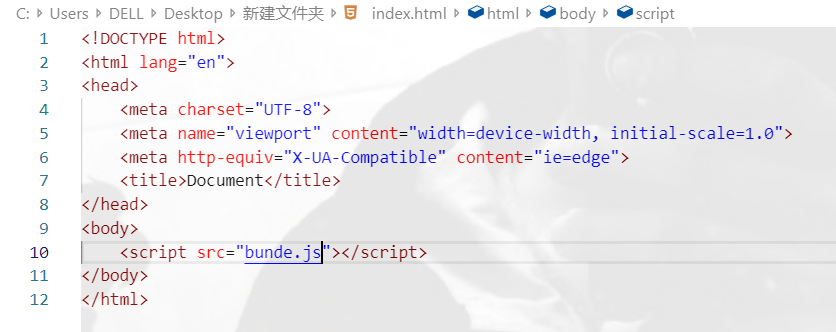
注意：在html中引入的js文件为虚拟js文件，只是方便我们做项目时使用，最后我们将所有工作都做完以后再打包的js文件，才会使用真实文件
最后我们在浏览器中打开html文件，输入localhost:8080/文件名称(注意：8081为nodejs中启动服务器时给出的地址)

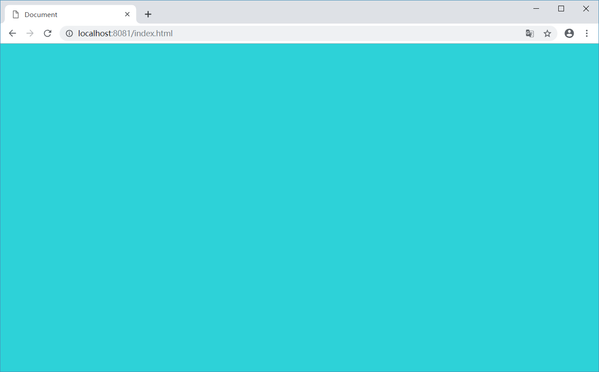
然后我们改变css样式，保存之后浏览器就会发生相应的改变，其它文件相同。
不用这种方式的话，改变一次css或js样式就需要重新打包一次文件，相对来说较为繁琐。
以上如有错误的地方还请见谅！